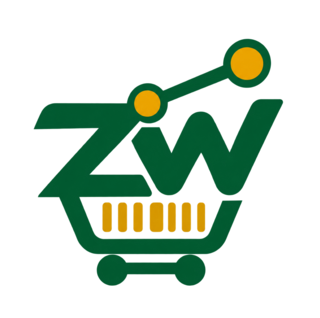

WORKSPACE
ZWConnect workspace
Loading module information…

ZWConnectModular workspaceWORKSPACE
Loading module information…
FEATURE MODULES
This route is a dedicated entry point. Authentication and shop authorization are still checked before operational data is displayed.